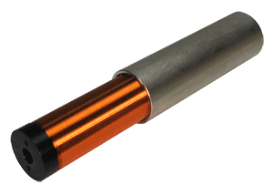
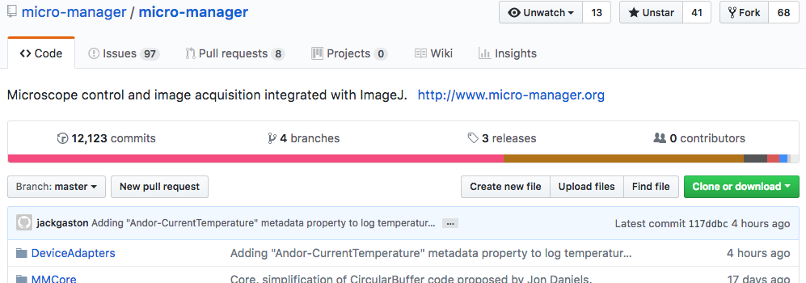
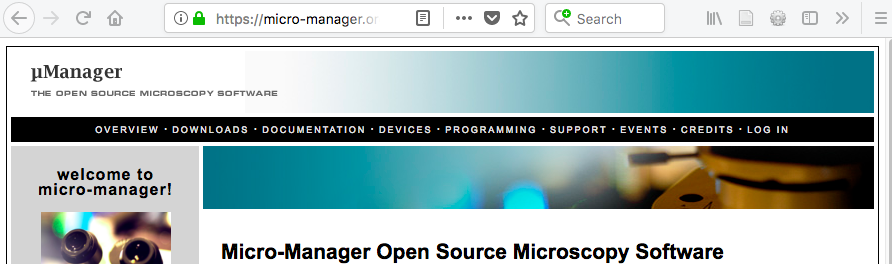
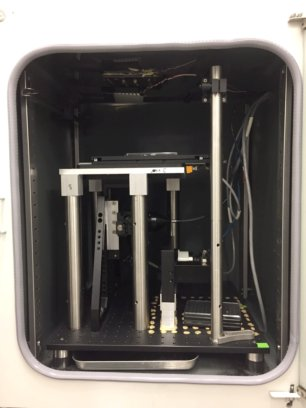
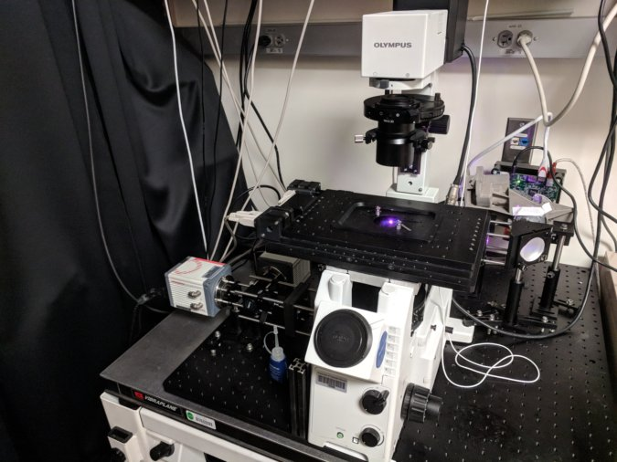
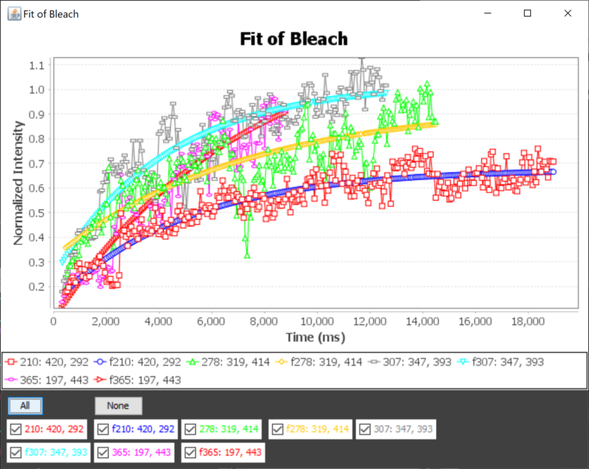
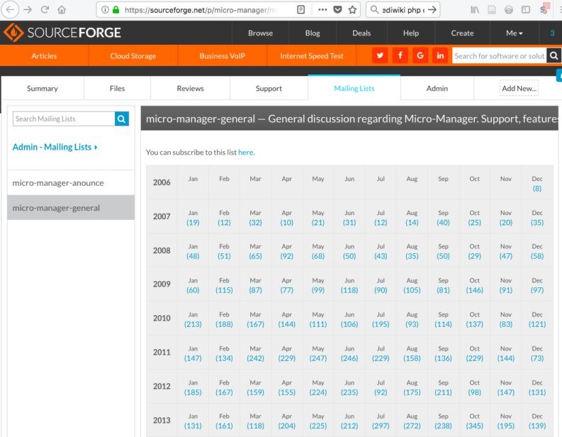
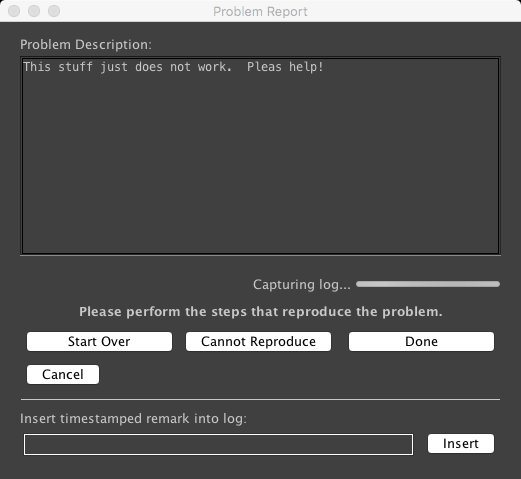

Software Control of Microscopes
A Special case of Robotics
5/5/2020, AQLM, Nico Stuurman, Vale lab, UCSF/HHMI
Software Control of Microscopes
online iBiology Microscopy Course

Microscope Automation Software

Grab and Store Images
Control light sources


Control Motors
Synchronization
User-defined order
User interface
Computer Interfaces

Serial cable (DB9)

USB

CameraLink
Microscope Automation Options:
Write from scratch
Write using Toolboxes
Vendor-neutral Software
Vendor-specific Software
Why μManager?
- Single, simple interface for all microscopes
- Open Source: Access to code, platform for collaboration
- Choice in hardware
- Quality and cost (free!)
- Cross-Platform
Software architecture


Nenad Amodaj

μManager, Key Points:
Open Source
> 100 code contributors

Community driven

Cross-platform
Mac
Windows

Extensible:
Scripts, Plugins, APIs
Matlab/Python
Matlab/Python
μManager Use
3 μManager publications were cited >1500 times
μManage plugins


μManager Cool Stuff

Hari Shroff (NIH)
Jon Daniels (ASI)



Roy Wollman, UCLA

Doug Shepherd, Univ. Colorado, Anschutz Med. Camp.
Automated FRAP analysis
Jess Sheu-Gruttadauria




Combining TIRF and Confocal images

Rui Dong

μManager Support




Thanks!

Ron Vale
Multiple generations of Vale Lab members
μManagers:
Mark Tuschida
Henry Pinkard
Nenad Amodaj Chris Weisiger
Arthur Edelstein
Ziah Dean
Oleksiy Danikhno
Karl Hoover
Henry Pinkard
Nenad Amodaj Chris Weisiger
Arthur Edelstein
Ziah Dean
Oleksiy Danikhno
Karl Hoover
Many, many code and documenation contributions from scientists, enthusiasts, and companies.
μManager Community
Supported by grants from the Sandler Foundation, NIH (NIBI) R01EB007187, and the CZI